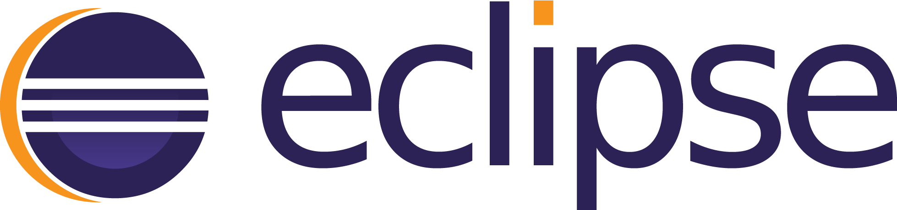

Profile
- 이름
- 오현이
- 이메일
- violet2710@nate.com
- 학력사항
-
- 2012.09 ~ 2013.08 국가평생교육진흥원 학점은행 컴퓨터공학학과 수료
- 2003.03 ~ 2006.02 명지전문대학 컴퓨터전자학과 졸업
- 2000.03 ~ 2003.02 건국대학교사범대학부속고등학교
- 경력사항
(총 8년 3개월) -
- 2018.05 ~ 현재 (주)투게더앱스
- 2013.11 ~ 2017.08 (주)***** R&D팀 대리
- 2012.06 ~ 2013.09 더스토리인스퍼레이션 대리
- 경력기술서
- 경력기술서 보기
- 교육이수 내용
-
- 2013.03 ~ 2013.05 웹디자이너와 퍼블리셔를 위한 HTML5 CSS3 / 한국직업전문학교
- 2012.09 ~ 2012.12 웹표준퍼블리셔전문가 / 한국직업전문학교
- 자격증
- 정보처리산업기사 (2006.12)
- 소개글
-
소통하는 실무자
8년 간 퍼블리셔로 업무를 진행하는 동안 구축, 프로모션, 운영 등 다수 프로젝트를 진행하면서 기본적인 스킬 이외에 다른 팀과 원활하게 소통하는 방법을 배울 수 있었습니다. 클라이언트 / 기획자 / 디자이너의 의도를 파악하고 화면으로 구현하기 위해 업무적인 커뮤니케이션을 지속적으로 하려고 합니다.
조금 더 효율적으로 사용할 수 있도록 사전 작업을 꼼꼼히 하는 편입니다. 프로젝트 시작 단계에서 제작 환경 및 필요 기능에 대해 꼼꼼하게 상황을 판단하고, 구현할 수 있는 방법에 대해 여러 가지 시도를 해보려고 노력합니다.
Skills & Tools
#Accessibility#Semantic#CrossBrowsing
#HTML5#CSS3#SCSS#Jquery#Bootstrap
#Eclipse#Brackets#Photoshop#XD#Zeplin
#HTML5#CSS3#SCSS#Jquery#Bootstrap
#Eclipse#Brackets#Photoshop#XD#Zeplin
